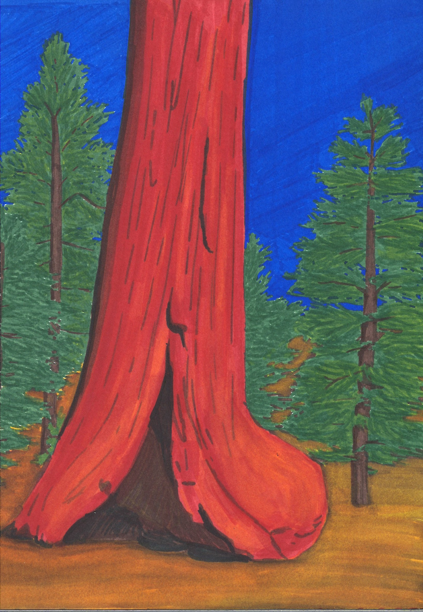
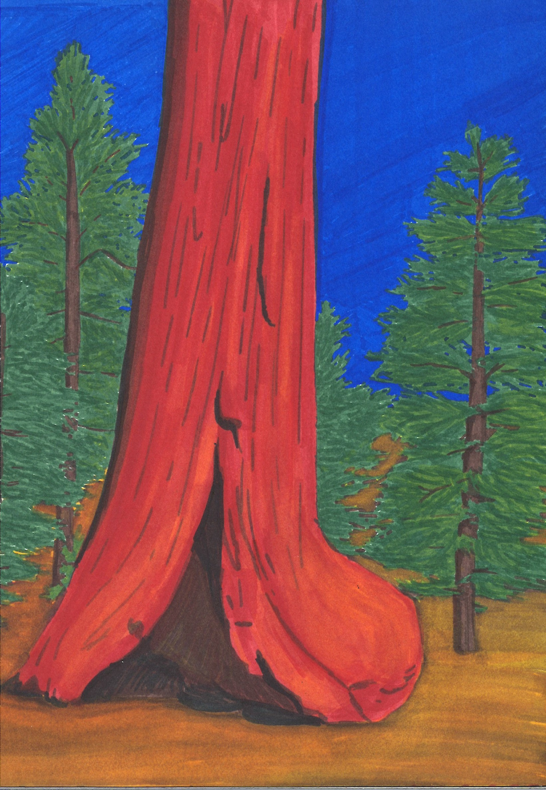

When I set my mind to something,
I fight to make it a reality.
I will fight to make your goals a reality as well.
Since highschool, I knew I wanted to spend a chunk of time living abroad. Finally, I recognized the perfect time was upon me and I decided to go to Europe. 8 months later, I set off on my journey, and spent nearly four years living in Germany.
When I moved back to LA, I knew that I wanted to get into tech. I worked hard to research the best role and program and went through an intensive Design course, while still working full-time. I knew what I wanted to do and I made sure it was going to happen.
My Path to UX
I knew that I wanted to break into the tech industry upon returning to Los Angeles. I think it's important for more women to be represented in the tech field and I also
want to be able to make decisions that will improve our lives.
I was lucky enough to receive a free scholarship for a front-end course through Udacity and was so excited to jump in.
What I realized, is that I enjoyed all of the aspects of coding that affected the aesthetics of my projects, but was not passionate about the storage and computations.
Fortunately, I also learned about User Experience at this time. What it meant, what it entailed and most imporantly, that it was a perfect fit for me. So I researched bootcamps for months while I started to self-teach on the side, and finally found and enrolled in Bloc.
I chose Bloc for it’s thorough curriculum and flexibility. Not only did it incorporate all of the core UI and UX principles, but it also required us to learn HTML and CSS. I now have a very strong grasp of both languages, which allows me to code projects on my own (like this website), but also to better work with developers in the future.
Bloc also allowed me to keep my job, while working through the program. As it was 100% online, I was able to set my own schedule and work around my full-time job. It was a strenuous ten months, but brought me so much joy to learn design skills.
My Background Before Design
- Analytics
- Client Management
- Creating Schedules
- Creative Strategy
- Delegating Assignments
- Design
- Research
- Sitemapping
- SEO
- Project Management
- Account Management
- Marketing
 



For examples of my digital work: